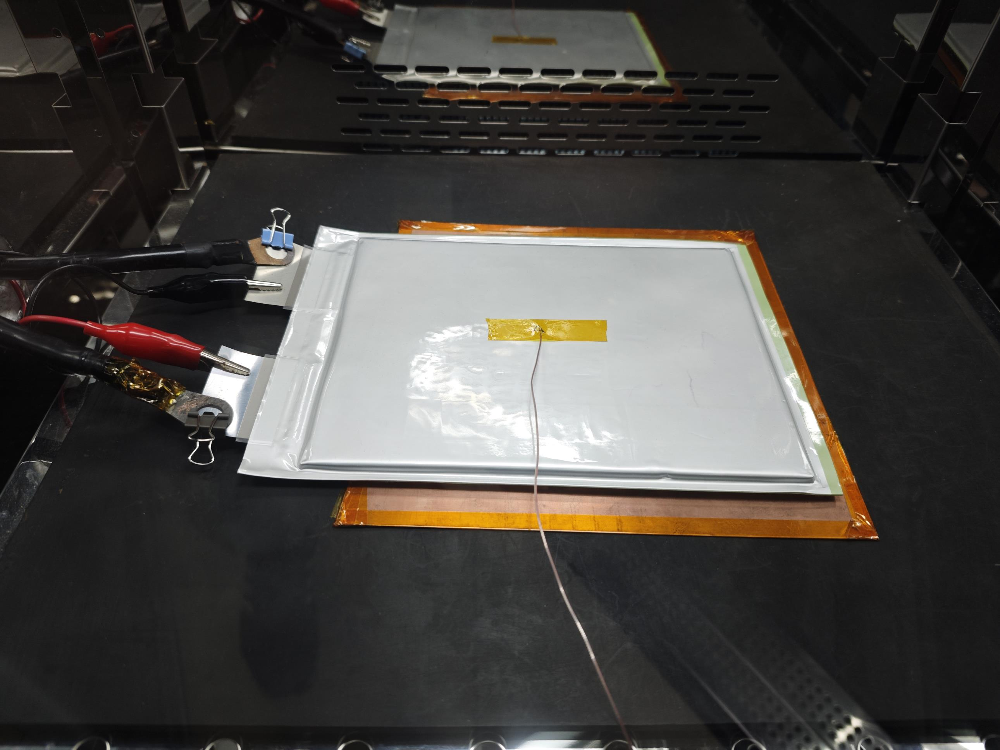
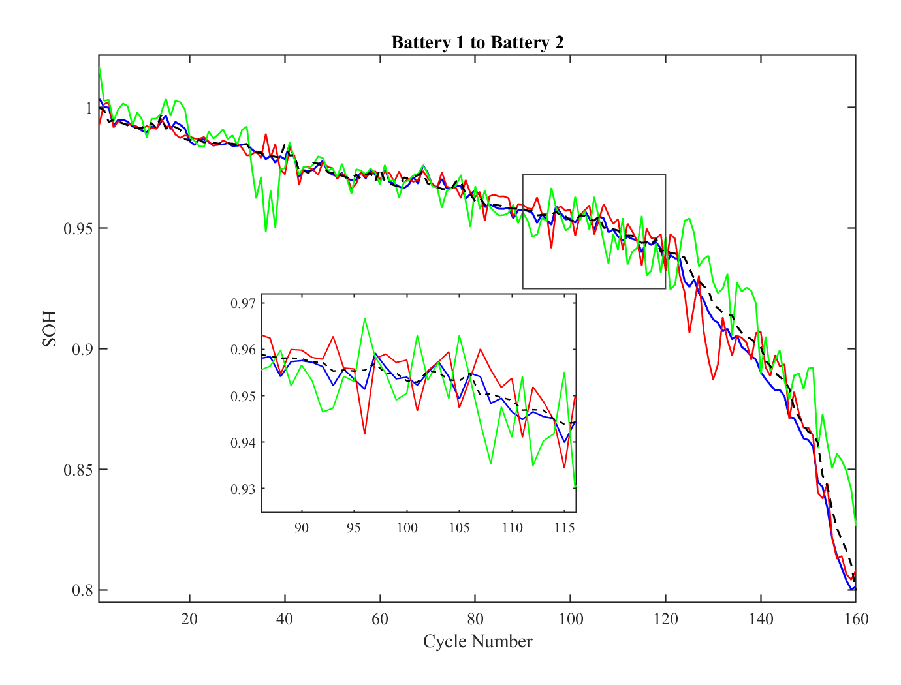

Source data
Health features were extracted from eight cells across NASA, CALCE, and XJTU datasets.
A GJO-TCN-Transformer framework for transferring degradation knowledge from multi-source public datasets to high-rate pouch-cell state-of-health prediction.
Can knowledge learned from public battery datasets support accurate full-life SOH prediction when labeled high-rate automotive pouch-cell data are limited?
The study separates broad degradation-pattern learning from target-cell adaptation, allowing the model to use limited high-rate aging data more efficiently.
Health features were extracted from eight cells across NASA, CALCE, and XJTU datasets.
Pearson correlation analysis was used to retain degradation-sensitive health indicators.
A TCN captured local temporal patterns while a Transformer modeled long-term dependencies.
TCN parameters were frozen and GJO-guided fine-tuning adapted the model to a high-rate pouch cell.
The source domain provides diverse degradation patterns; the target domain tests transfer to large-format cells under high-rate aging.
| Domain | Cells | Purpose |
|---|---|---|
| NASA | B5, B6, B7 | Source feature learning |
| CALCE | C35, C36, C37 | Source feature learning |
| XJTU | D1, D2 | Source feature learning |
| Laboratory pouch cells | Battery 1, 2, 3 | Fine-tuning and evaluation |


The proposed model achieved the lowest reported MAE, RMSE, and MAPE across all four transfer settings in the manuscript.
| Fine-tuning cell → prediction cell | MAE (%) | RMSE (%) | MAPE (%) |
|---|---|---|---|
| Battery 1 → Battery 2 | 0.298 | 0.436 | 0.325 |
| Battery 1 → Battery 3 | 0.417 | 0.524 | 0.444 |
| Battery 2 → Battery 1 | 0.308 | 0.528 | 0.334 |
| Battery 3 → Battery 1 | 0.300 | 0.451 | 0.319 |